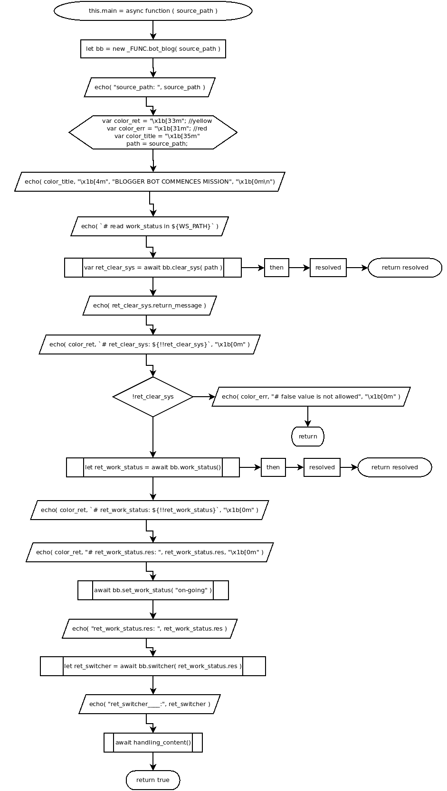

this.main = async function( source_path )
Flowchart

Code
this.main = async function ( source_path ){
let bb = new _FUNC.bot_blog( source_path );
echo( "source_path: ", source_path );
var color_ret = "\x1b[33m"; //yellow
var color_err = "\x1b[31m"; //red
var color_title = "\x1b[35m"
path = source_path;
echo( color_title, "\x1b[4m", "BLOGGER BOT COMMENCES MISSION", "\x1b[0m\n");
echo( `# read work_status in ${WS_PATH}` );
var ret_clear_sys = await bb.clear_sys( path ).then( async resolved => { return resolved } );
echo( ret_clear_sys.return_message );
echo( color_ret, `# ret_clear_sys: ${!!ret_clear_sys}`, "\x1b[0m" );
if( !ret_clear_sys ){
echo( color_err, "# false value is not allowed", "\x1b[0m" );
return;
}
let ret_work_status = await bb.work_status().then( (resolved)=>{ return resolved; } );
echo( color_ret, `# ret_work_status: ${!!ret_work_status}`, "\x1b[0m" );
echo( color_ret, "# ret_work_status.res: ", ret_work_status.res, "\x1b[0m" );
await bb.set_work_status( "on-going" );
echo( "ret_work_status.res: ", ret_work_status.res );
let ret_switcher = await bb.switcher( ret_work_status.res );
echo( "ret_switcher____:", ret_switcher );
await handling_content();
return true;
}
Refers to:
-
async clear_sys( path )
-
async work_status()
-
async set_work_status( status )
-
async switcher( data )
-
handling_content()